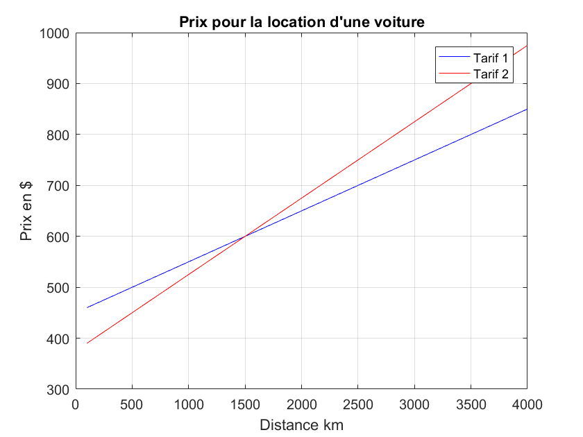

Création de graphiques
Voir le fichier Graphe1.m
Contents
plot, grid, xlabel, ylabel, title et legend
- plot(y) trace les valeurs du vecteur y en fonction des indices du vecteur.
- plot(x, y) trace les valeurs du vecteur y en fonction de x.
- plot(x, y, 'o-b') trace un rond bleu par couple de données et les relie par une courbe continue bleue.
- plot(x, y, 'ob' , x, y, '-r') trace un rond bleu par couple de donnée et les relie par une courbe continue rouge.
- plot(x1,y1, '-b', x2, y2, '-r') trace x1 en fonction de y1 en bleu et x2 en fonction de y2 en rouge.
- plot(x1,y1,'-b'); hold on; plot(x2,y2,'-r') donne le même résultat en deux étapes. L'instruction hold on indique à Matlab d'ajouter la courbe suivante sur le même graphique.
- legend ('Courbe 1','Courbe 2') identifie la ligne bleue et la ligne rouge ci-dessus.
- grid on ajoute un quadrillage au graphique.
- xlabel('texte') écrit le texte qui accompagne l'axe des x.
- ylabel('texte') écrit le texte qui accompagne l'axe des y.
- title('texte') écrit le titre en haut de la figure.
Voilà pour l'essentiel !
Exemple
Une agence de location de voiture propose deux formules pour des vacances de 15 jours :
- un tarif forfaitaire de 30$ par jour plus 10 cents du km
- un tarif forfaitaire de 25 $ par jour plus 15 cents du km.
Déterminer graphiquement la distance au-delà de laquelle la première formule devient plus intéressante que la seconde.
clear; clc
Solution
Fixer 2 distances pour évaluer les coûts, par exemple : 100 et 4000 km.
Former le vecteur des distances :
distance = [100, 4000];
Calculer les prix selon les 2 formules :
nJours = 15;
tarif1 = 30; tarif2 = 25; % $ fixe par jour
prix1(1) = tarif1*nJours + 0.10*distance(1);
prix1(2) = tarif1*nJours + 0.10*distance(2);
prix2(1) = tarif2*nJours + 0.15*distance(1);
prix2(2) = tarif2*nJours + 0.15*distance(2);
Tracer les deux vecteurs, l'un en bleu et l'autre en rouge :
plot(distance,prix1,'b-', distance,prix2,'r-'); % Compléter le graphique. grid on;xlabel('Distance km');ylabel('Prix en $'); title('Prix pour la location d''une voiture'); % Rappel : 2 apostrophes consécutives = % une seule apostrophe à l'affichage legend('Tarif 1', 'Tarif 2')

Évaluer visuellement le point de croisement. Utiliser la loupe du menu pour grossir le point de croisement.
Le graphique apparaît dans une fenêtre auxiliaire qui demeure affichée aussi longtemps que l'on désire. Pour comprendre la syntaxe de cette procédure, écrire :
>> doc plot